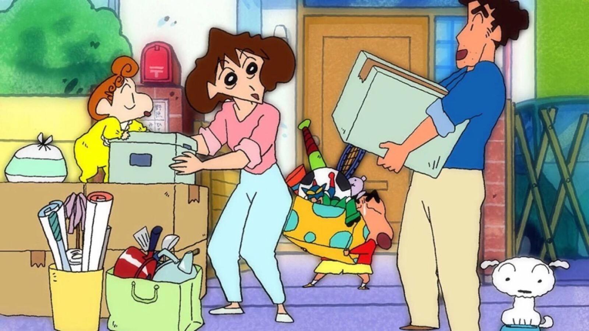

首页
蜡笔小新介绍
人物介绍
动漫图片
精彩片段
关于我们

创作背景
《蜡笔小新》是一部于1992年出品的日本家庭搞笑动画片，该片主要由本乡满、原惠一、武藤裕治导演，日本朝日电视台于1992年4月13日播映了第一集。至今仍在播出。
该片根据日本漫画家臼井仪人所创作的同名漫画作品《蜡笔小新》改编而成，叙述了日本5岁小男孩野原新之助，在日常生活中与家人、老师、同学、邻居、路人等之间所发生的故事
经典语录
啊，下雨了。 淅沥淅沥，哗啦哗啦，雨下起来了，我去送伞接我的妈妈回来。 嗨！我来接你回家。
只要有梦想和希望，绝不放弃明天的和平！
我很幸福，因为身边有你这个朋友，我甚至认为是为了认识你而生的。
要藏一颗树，就要藏在森林中。要藏一个人，就要藏在人群中。
镜子里显示出来的永远只是真实的影像，而不是真实的自己。
哪怕和你吵架了，哪怕和你闹别扭了。我都会一直关心你，担心你。保护你。因为你是我最爱的小白。
如果你很害怕的话，就牵着我的手吧，让我带你去安全的地方。带你去属于我们自己的地方。
小葵不要哭，不管发生什么事，我都会一直守在你身边保护你的。哥哥向你保证。
幸福这种东西，都要在失去的时候才会发现的。